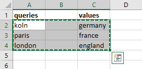
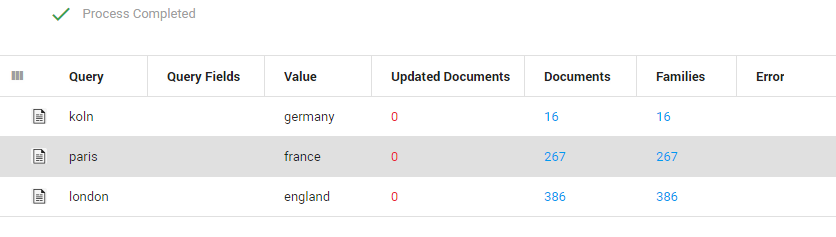

Assign values
Assign values to your queries. Each query will return a number of found documents. The assigned values can be added to those documents as metadata. The values will be added to a selected field.
Assign Values to your Queries
- When using a spreadsheet, leave an empty column between the queries and assigned values.

- When using a text document, leave two tabs between the queries and assigned values.

- Copy and paste the queries and their assigned values to Batch Search. The assigned values will be added to the Value column.

- Click

- For each query a number of documents/families will be found.
For example, the query "koln" returns 16 found documents. These documents can be updated with the value "germany". This value will be added to a selected field. The value "france" will be added to documents found with the query "paris".

- Select a field from the dropdown listbox. For example, the field Remarks. Select the Scope (Document: Only the found documents. Family: The found documents plus related documents (for example, all documents from an email conversation)). Click Update. Click OK.

- The values are added to the field Remarks.